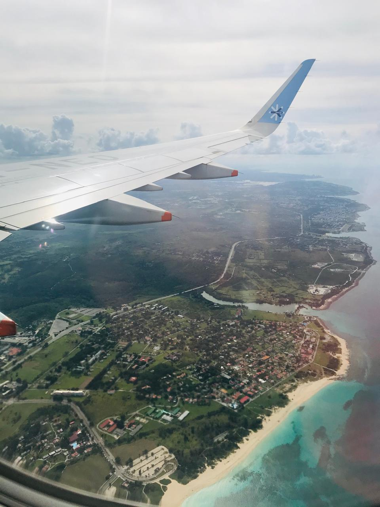

¡Bienvenidos a mi Blog de viajes!
Aquí compartiré mis aventuras, descubrimientos y consejos para aquellos que, como yo, aman explorar el mundo. Desde los rincones más remotos hasta las ciudades más vibrantes, cada destino tiene su propia historia que contar. Si buscas inspiración, guías útiles o simplemente quieres soñar con nuevos horizontes, este es el lugar perfecto para ti. Prepárate para un viaje lleno de historias, recomendaciones y experiencias únicas que te ayudarán a planificar tu próxima aventura.
Un poco sobre mi
Soy una estudiante con una gran pasión por conocer el mundo.
Desde que era pequeña, siempre soñé con explorar nuevos lugares, culturas y tradiciones. A lo largo de mis estudios, he tenido la oportunidad de viajar a diferentes países, lo que me ha permitido vivir experiencias únicas y aprender de cada lugar que he visitado.
Mi curiosidad y amor por descubrir el mundo me motivan a seguir aprendiendo y compartiendo mis aventuras con otros, siempre en busca de nuevas historias y perspectivas que enriquecerán mi camino.
Que esperar a la hora de tu viaje internacional
1.Choque cultural y adaptación: Las personas pueden ser muy amables o, en algunos lugares, más reservadas. El modo de relacionarse puede variar según el país, pero siempre es interesante aprender y adaptarse a nuevas formas de socializar.
2.Adaptación a la moneda local y precios: Dependiendo del destino, los tipos de cambio pueden ser un desafío y es posible que encuentres diferencias significativas en el costo de vida (más barato o más caro que en casa).
3.Desafíos con el transporte: El sistema de transporte puede ser muy diferente al que estás acostumbrado. Desde trenes y autobuses en algunas ciudades hasta alquiler de coches o taxis. En algunos destinos, puede haber retrasos o incluso huelgas, lo que puede complicar el itinerario.
4.Diversidad gastronómica: Un viaje internacional es una oportunidad única para probar comidas tradicionales y experimentar sabores que tal vez nunca hayas imaginado. Sin embargo, hay que estar preparado para diferencias en ingredientes y platos, y a veces, el paladar puede necesitar un poco de adaptación.
5.Nuevas normas de seguridad y regulaciones: Asegúrate de familiarizarte con las normas de seguridad del destino, especialmente en cuanto a documentos de viaje, vacunas, y requisitos de entrada. Cada país tiene reglas específicas sobre lo que se permite y lo que no.
Que esperar a la hora de tu viaje nacional
1.Conexión más cercana con la cultura local: Al viajar dentro de tu propio país, probablemente experimentarás una conexión más profunda con tu cultura. Podrás entender y disfrutar de los elementos históricos, gastronómicos y tradicionales de tu región sin las barreras culturales de un viaje internacional.
2.Flexibilidad y menor preparación: No necesitas estar tan pendiente de los requisitos de visado o cambios de moneda, lo que te otorga una mayor libertad y flexibilidad.
3.Menor adaptación al idioma: Si viajas dentro de tu país, el idioma y la comunicación no deberían ser un problema, lo que facilita la experiencia.
4.Menor impacto económico: Un viaje dentro de tu propio país suele ser más económico que un viaje internacional, ya que no incluye pasajes de avión largos ni otros gastos relacionados con la distancia.
5.Menor estrés y logística simplificada: Viajar localmente significa que es probable que enfrentes menos estrés logístico. No tendrás que lidiar con diferencias horarias tan significativas o regulaciones internacionales complicadas.
Mis tips para viajes internacionales
- Verifica tu pasaporte y visados: Asegúrate de que tu pasaporte esté vigente y revisa si necesitas una visa para tu destino. Algunos países requieren que el pasaporte tenga una validez mínima de seis meses.
- Lleva copias de tus documentos: Guarda copias físicas y digitales de tu pasaporte, visado, boletos y reservas. Esto te será útil si se pierden o te los roban.
- Moneda local y tarjeta SIM: Asegúrate de tener algo de moneda local antes de llegar y verifica las tarifas de tu tarjeta de crédito. Además, es útil comprar una tarjeta SIM local para mantenerte conectado a internet.
- Investiga sobre el transporte local: Familiarízate con las opciones de transporte público o servicios de taxis en tu destino. Algunas ciudades tienen tarjetas de transporte que te permiten ahorrar dinero en tus viajes.
- Adapta tus hábitos a la cultura local: Investiga las costumbres y normas sociales del país que visitas. Respetar la cultura local te hará disfrutar más de la experiencia y te evitará inconvenientes.
- Empaque ligero y eficiente: Evita el exceso de equipaje. Lleva lo necesario y haz una lista para asegurarte de no olvidar cosas importantes. Un truco es enrollar la ropa para ahorrar espacio.
- Evita cambios de divisa en aeropuertos: Las casas de cambio en aeropuertos suelen ofrecer tasas menos favorables. Intenta cambiar dinero en la ciudad o usa cajeros automáticos para obtener mejores tasas.
- Conoce el clima:Conoce el clima: Consulta la previsión del tiempo para tu destino. Esto te ayudará a empacar ropa adecuada y a planificar actividades al aire libre.